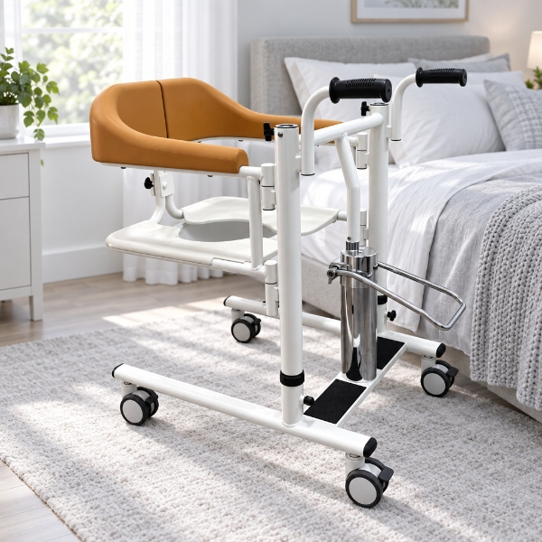
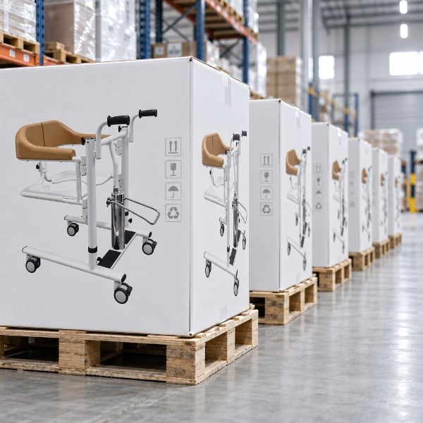

What is DME? A guide to durable medical equipment and Medicare coverage
DME — durable medical equipment — is the category that patient lifts, wheelchairs, and hospital beds all fall under. If you are sourcing patient lifts for the US market, understanding what DME is, how it is classified, and how Medicare pays for it is the difference between selling a product and selling into a reimbursement system.
What's in this guide
- What DME (durable medical equipment) actually means — and the 5-part definition CMS uses
- Where patient lifts fit — HCPCS code E0630
- How Medicare covers and reimburses DME through suppliers
- Why the DME classification matters for anyone buying or selling patient lifts
DME stands for durable medical equipment. In the US healthcare system, it is a specific, regulated category — not a marketing term. A patient lift is DME. A wheelchair is DME. A hospital bed is DME. A box of bandages is not. The distinction matters because DME is reimbursed by Medicare and private insurance under a defined set of rules, and those rules determine how the equipment gets to the patient, who pays, and who supplies it.
What is durable medical equipment?
The Centers for Medicare & Medicaid Services (CMS) — the agency that runs Medicare — uses a five-part test to decide whether an item qualifies as DME. An item is DME if it meets all five:
- It can withstand repeated use. DME is built to be used again and again — unlike a disposable supply, it is not single-use.
- It serves a medical purpose. The primary function is medical, not comfort or convenience.
- It is not useful to someone without an illness or injury. A healthy person has no use for a patient lift; a healthy person can use a regular chair.
- It is appropriate for use in the home. DME is designed to be used where the patient lives, not only in a hospital.
- It has an expected life of at least three years. DME is an investment, not a consumable.
A patient lift passes all five without argument: it is a steel-frame device used dozens of times a day, it exists to move a person who cannot move themselves, it is useless to an able-bodied person, it is used in home care every day, and a well-built one lasts 5 to 7 years. That is DME.
Where patient lifts fit: HCPCS code E0630
In the US, every reimbursable medical item has a HCPCS code — the billing code that identifies it to Medicare and insurers. A patient lift's code is E0630, described by CMS as:
"Patient lift, hydraulic or mechanical, includes any seat, sling, strap(s) or pad(s)."
That single code is the reason a supplier can bill Medicare for a patient lift. If you are selling patient lifts into the US, the E0630 code is how your product enters the reimbursement system. A buyer who runs a DME business is not just buying a piece of equipment — they are buying a product they can bill under E0630. That is why FDA listing and the correct HCPCS code matter together: one makes the product legal to sell, the other makes it reimbursable.
How Medicare covers DME
Medicare Part B covers DME when a few conditions are met. The flow looks like this:
- A doctor prescribes it. The patient's physician writes an order and documents medical necessity. Without this, Medicare will not pay.
- A Medicare-enrolled DME supplier provides it. The patient gets the equipment from a supplier that is enrolled with Medicare — not from any retailer.
- The supplier submits a claim. The supplier bills Medicare under the correct HCPCS code (E0630 for patient lifts).
- Medicare pays its share. After the Part B deductible, Medicare generally pays 80% of the approved amount, and the beneficiary pays the remaining 20%.
The important thing to understand if you are selling into this market: the supplier is the one who buys the equipment and the one who bills Medicare. The patient does not typically buy a patient lift out of pocket. That is why the customer for a patient lift manufacturer is the DME supplier — the company that has the patients, the prescriptions, and the billing relationship with Medicare.

Why the DME classification matters for buyers
If you are a procurement manager, a DME distributor, or a care-facility operator sourcing patient lifts, the DME classification changes what you should care about:
- Compliance. The product must be FDA-listed and match its HCPCS code. A supplier cannot bill E0630 for a product that does not actually meet the definition.
- Durability. DME is defined by its 3-year-plus expected life. A cheap frame that fails in 18 months is not just a bad purchase — it is a reimbursement and liability problem.
- Documentation. Suppliers need the FDA registration number, device listing, and Instructions for Use to stay compliant and to respond to audits. If a manufacturer cannot produce these, the supplier is exposed.
- Reimbursement economics. Medicare sets an approved amount for each code. A supplier's margin is the difference between what they pay the manufacturer and what Medicare allows. That is why factory-direct pricing matters so much in this market.

FAQ
What does DME stand for?
DME stands for durable medical equipment. It is a category of medical devices that can withstand repeated use, serve a medical purpose, and are appropriate for use in the home — such as patient lifts, wheelchairs, hospital beds, and oxygen equipment.
What qualifies as durable medical equipment?
Under CMS guidance, an item qualifies as DME if it can withstand repeated use, is primarily used for a medical purpose, is not generally useful to someone without an illness or injury, is appropriate for use in the home, and has an expected life of at least three years.
Is a patient lift considered DME?
Yes. A patient lift is classified as durable medical equipment under HCPCS code E0630. Medicare covers patient lifts for beneficiaries who have a medical need and a doctor's prescription, reimbursed through a Medicare-enrolled DME supplier.
How does Medicare cover DME?
Medicare Part B covers DME when a doctor prescribes it and documents medical necessity. The beneficiary gets the equipment from a Medicare-enrolled DME supplier, and the supplier submits a claim to Medicare for reimbursement. Medicare pays 80% of the approved amount after the Part B deductible; the beneficiary typically pays the remaining 20%.
What is the difference between DME and disposable medical supplies?
DME is durable — built to withstand repeated use with an expected life of at least three years, like a patient lift or hospital bed. Disposable supplies are single-use or short-term, like bandages, catheters, or oxygen tubing. DME is reimbursed under Medicare Part B as equipment; supplies are billed differently.
Sourcing patient lifts for the US market?
We manufacture FDA-listed patient lifts (HCPCS E0630) — manual, hydraulic, and electric, 150 kg capacity. We provide the registration number, device listing, and English IFU with every order. Send us your requirements for a factory-direct quote.
Get a QuoteThis article is for general information and is not legal or billing advice. Medicare coverage rules and reimbursement amounts change; always confirm current CMS guidance and consult your billing or compliance team for specific decisions.